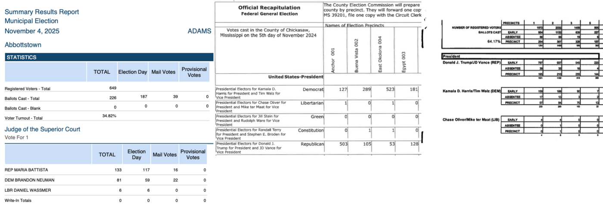

Derek Willis, OpenElections

For Texas and Mississippi, we tested Claude Haiku 4.5, Claude Sonnet 4.5, Gemini 3 Flash, Gemini 2.5 Pro, and Gemini 3 Pro.
For Pennsylvania, we used Claude Sonnet 4.5 to write a custom Python parser.
| State | Sample Size | Baseline (Reference Data) |
|---|---|---|
| Texas | 8 counties from 2024 general | Web UI LLM OCR + Python parsers |
| Mississippi | 9 counties | OCR + manual data manipulation |
| Pennsylvania | Multiple counties from 2024 and 2025 | Custom Python parsers (Electionware) |
Sample selection: Deliberately chose counties with different formats, complexity levels (4-47 precincts), and layout styles.
| Model | Accuracy | Sample | Baseline Method |
|---|---|---|---|
| Gemini 2.5 Pro | 99.1% | 9 MS counties | OCR + manual cleanup |
| Claude Haiku | 100% | Scurry County, TX | LLM Web UI |
| Claude Haiku | 99.9% | Limestone County, TX (21 precincts) | LLM Web UI |
| County | Precincts | Votes Checked | Vote Accuracy | Precinct Name Errors |
|---|---|---|---|---|
| Scurry | 11 | 321 | 100.0% | 0 |
| Limestone | 21 | 870 | 99.9% | 0 |
| San Saba | 6 | 72 | 91.7% | 0 |
| Foard | 4 | 146 | 84.9% | 0 |
| Lynn | 8 | 376 | 71.5% | 0 |
| Jones | 4 | 240 | 68.3% | 0 |
| Cottle | 4 | 106 | 64.2% | 0 |
| Panola | 19 | 364 | 16.2% | 0 |
1. Missing zero-value rows (all models)
2. Incomplete extraction (default max tokens)
3. Vote count errors (PDF-specific)
4. Precinct name OCR errors (vertical vs horizontal)
Electionware system (used by many PA counties):
You can't just trust LLM output. Here's how we validate against reference:
1. Direct comparison to reference data
2. County-level total checks
3. Multi-model extraction on samples
4. Automated validation patterns
5. Targeted manual review
Replace existing extraction methods (for clean formats)
LLM as first pass (for more complex formats)
Figuring out which ones is super important